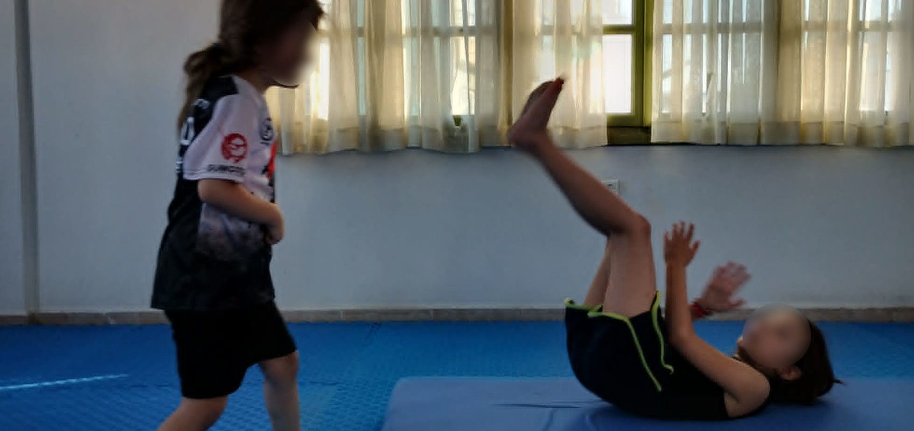

Όταν ένας γονέας ακούει τη λέξη «Sumo» ή «πολεμική τέχνη», είναι φυσιολογικό να δημιουργούνται ερωτήματα.
«Θα μάθει το παιδί μου να χτυπάει;»
«Μήπως θα γίνει πιο επιθετικό;»
«Είναι ασφαλές ένα άθλημα επαφής;»
«Μήπως θα παχύνει το παιδί μου;» (αυτό ειδικά μου γυρίζει τα μάτια και τα έντερα)
Αυτές οι ανησυχίες είναι απόλυτα κατανοητές, πλην της τελευταίας.
Όμως η πραγματικότητα είναι διαφορετική.
Οι παραδοσιακές πολεμικές τέχνες δεν δημιουργήθηκαν για να καλλιεργούν τη βία. Δημιουργήθηκαν για να εκπαιδεύουν τον άνθρωπο στον έλεγχο του σώματος, της δύναμης και των αντιδράσεών του.
Το Sumo δεν διδάσκει την επιθετικότητα.
Διδάσκει τον αυτοέλεγχο και την πάλη με επαφή.
Η δύναμη από μόνη της δεν είναι κάτι αρνητικό. Το αντίθετο.
Ένα παιδί χρειάζεται να μάθει να αναπτύσσει και να χρησιμοποιεί τη δύναμή του:
Στο Sumo το παιδί μαθαίνει να σπρώχνει, να αντιστέκεται και να ανατρέπει τον συναθλητή του μέσα σε συγκεκριμένο πλαίσιο και με σαφείς κανόνες.
Δεν μαθαίνει να προκαλεί πόνο.
Μαθαίνει να διαχειρίζεται τη δύναμή του, να σέβεται τον συναθλητή του και να τον προστατεύει.
Η σωστή σωματική επαφή αποτελεί μέρος της φυσιολογικής ανάπτυξης.
Μέσα από ασφαλείς ασκήσεις τα παιδιά μαθαίνουν:
Ένα παιδί που μαθαίνει να αγωνίζεται με κανόνες, μαθαίνει παράλληλα να σέβεται.
Δεν γίνεται να μη μάθει πειθαρχία και σεβασμό ένα παιδί που ασχολείται με το Budo.
Ένα σημαντικό στοιχείο των πολεμικών τεχνών είναι ότι η προσπάθεια δεν βασίζεται στον θυμό.
Ο αθλητής δεν κερδίζει επειδή θυμώνει περισσότερο.
Κερδίζει επειδή:
Η ψυχραιμία είναι μεγαλύτερη δύναμη από την επιθετικότητα.
Στην καθημερινότητα πολλά παιδιά δυσκολεύονται όταν κάτι δεν τους πετυχαίνει.
Στο Sumo μαθαίνουν ότι:
Ο συναθλητής που σήμερα κερδίζει μπορεί αύριο να είναι ο συνεργάτης σου στην προπόνηση. Αυτός ο ίδιος μπορεί να σου μάθει κάτι που εκτελεί σωστά και του βγαίνει στον αγώνα.
Οι πολεμικές τέχνες είναι ατομικά αθλήματα, αλλά στην ουσία ο αθλητής ανήκει στην ομάδα και στον σύλλογο. Ο σύλλογος είναι κάτι σαν οικογένεια.
Η προπόνηση πραγματοποιείται μέσα σε συγκεκριμένους κανόνες:
Το παιδί δεν αφήνεται να χρησιμοποιεί ανεξέλεγκτα τη δύναμή του.
Μαθαίνει πότε, πώς και γιατί χρησιμοποιεί μια τεχνική.
Επίσης, στις μικρές ηλικίες δεν υπάρχουν χτυπήματα στο Sumo.
Ένα παιδί που έχει αυτοπεποίθηση δεν χρειάζεται να αποδεικνύει κάτι στους άλλους.
Οι πολεμικές τέχνες διδάσκουν ότι η μεγαλύτερη νίκη είναι η αποφυγή μιας σύγκρουσης.
Η γνώση της δύναμης δημιουργεί υπευθυνότητα, όχι επιθετικότητα.
Στη γενιά τη δική μου, πολλοί γονείς πίστευαν ότι οι πολεμικές τέχνες θα κάνουν το παιδί επιθετικό. Στην πραγματικότητα συμβαίνει το αντίθετο.
Είτε κάνει κάποιος Karate-do, είτε Taekwondo, είτε Judo, είτε Sumo μαθαίνει να σέβεται τον πόνο του χτυπήματος και της πρόσκρουσης με το έδαφος.
Το παιδί που σε καθημερινή βάση βιώνει ελεγχόμενα τη δυσκολία και την προσπάθεια, δεν έχει ανάγκη να προκαλέσει εκούσιο πόνο στους άλλους.
Αν ένα παιδί γίνει επιθετικό μέσα στο Budo, ο προπονητής οφείλει να το αντιμετωπίσει και, αν χρειαστεί, να το απομακρύνει. Δεν μπορεί κάποιος να ονομάζεται δάσκαλος πολεμικών τεχνών και δρόμων αν δεν καλλιεργεί συμπεριφορά, αρχές και αξίες. Ο σκοπός των Budo δεν είναι μόνο η τεχνική. Ο σκοπός είναι η καλλιέργεια του ανθρώπου.
Δεν μπορεί να υπάρξει πραγματική καλλιέργεια όταν απουσιάζουν ο σεβασμός, η πειθαρχία και η υπευθυνότητα.
Το Sumo δεν κάνει τα παιδιά βίαια.
Τα παιδιά μαθαίνουν:
Η βία γεννιέται από την έλλειψη ελέγχου.
Η πολεμική τέχνη διδάσκει ακριβώς το αντίθετο:
Να έχεις δύναμη, αλλά να ξέρεις πότε και πώς να τη χρησιμοποιείς.
